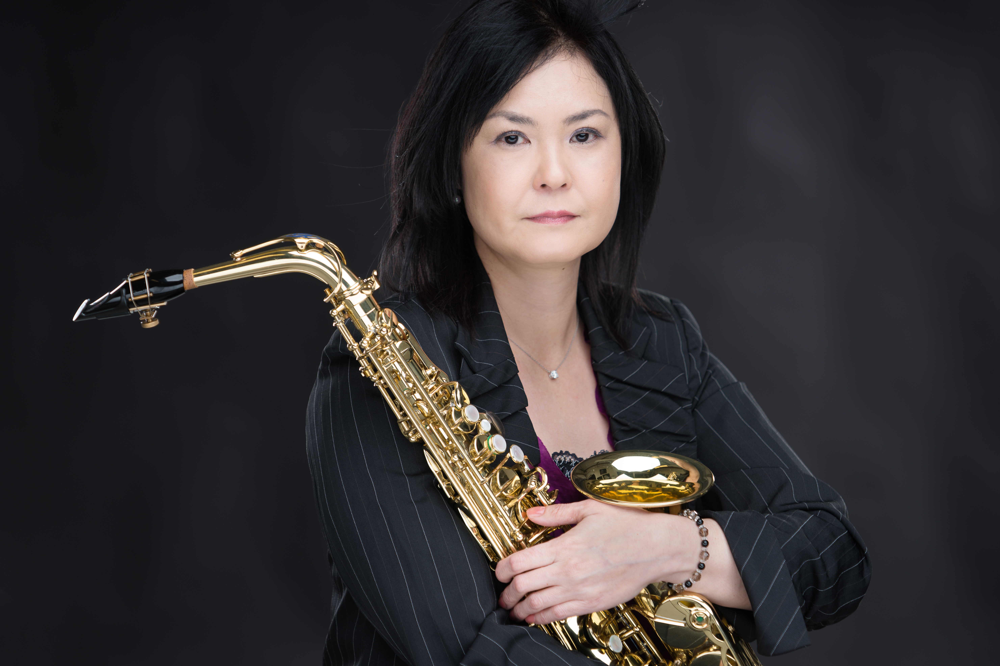

Biography
Originally from Okinawa, Japan, I received a Bachelor of Music degree in Saxophone Performance from the University of North Carolina School of the Arts in Winston-Salem, North Carolina. I studied with Taimur Sullivan and James Kalyn and took master classes with Arno Bornkamp, James Houlik, and the New Century Saxophone Quartet. I have been teaching and performing since 1996 in both Japan and the United States.
I enjoy large ensembles and was the principal Alto Saxophonist for the Winston-Salem Community Band (N.C., 2005-2012) and the San Jose Metropolitan Band (Calif., 2017-2019), with whom I performed numerous solos.
I moved to Santa Fe, New Mexico, in March 2019 and have performed regularly with the Santa Fe Concert Band and High Desert Winds. My new duo, Saxophonic, formed in 2021.
I can give lessons in both English and Japanese.
沖縄生まれの沖縄育ち。渡米後、ノースカロライナ州立芸術大学音楽学士終了。サキソフォーンを Taimur Sullivan, James Kalyn, James Houlik 各氏に師事。アンサンブルコーチングを Arno Bornkamp, The New Century Saxophone Quartet から受ける。 1996年から個人レッスンや演奏活動を行っている。特に吹奏楽を好み Winston-Salem Community Band では首席アルトサックス奏者を2005年から2012年、San Jose Metropolitan Bandでは2017年から2019年まで努め数多くのソロを担当した。 2019年3月ニューメキシコ州サンタフェ市に移住。移住後Santa Fe Concert Band、High Desert Windsに入団し演奏活動を行っている。 サックスデュオ、Saxophonicを2021年に結成し小アンサンブルでの演奏活動も始めた。
レッスンは英語もしくは日本語の両言語で可能。